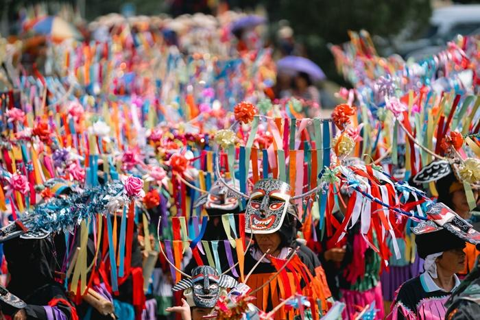

พระยาอนุมานราชธนได้ให้ความหมายของคำว่า "ประเพณี" ว่าเป็นความประพฤติที่ชนกลุ่มหนึ่งอยู่ในที่แห่งหนึ่ง ซึ่งถือเป็นแบบแผนและสืบต่อกันมานาน ถ้ามีคนในกลุ่มประพฤติออกนอกแบบ ก็ถือว่าผิดประเพณีหรือผิดจารีตประเพณี ฉบับพจนานุกรมฉบับบัณฑิตยสถานกำหนดว่า "ประเพณี" หมายถึง ระเบียบแบบแผนที่กำหนดพฤติกรรมในสถานการณ์ต่างๆ ที่คนในสังคมยึดถือปฏิบัติสืบกันมา โดยมีคำว่า "ขนบ" หมายถึง ระเบียบแบบอย่าง และคำว่า "ธรรมเนียม" หมายถึง ที่นิยมใช้ และเมื่อรวมกันมีความหมายว่า ความประพฤติที่คนส่วนใหญ่ยึดถือเป็นแบบแผน และมีการปฏิบัติสืบกันมา ต่อมาจะให้รุ่นต่อๆ ไปปฏิบัติตามกัน โดยมีเป้าหมายและวิธีการที่เหมือนกัน โดยประเพณีในสังคมระดับประเทศจะมีลักษณะที่คล้ายกันโดยทั่วไป แต่อาจมีความแตกต่างไปตามท้องถิ่น และมักมีความเกี่ยวข้องกับความเชื่อในพระพุทธศาสนาและพราหมณ์มาตั้งแต่โบราณ ในประเพณีไทยมักมีความสัมพันธ์กับพระพุทธศาสนาและพราหมณ์อย่างสมบูรณ์แบบตั้งแต่อดีตโบราณไปจนถึงปัจจุบัน โดยมีการสืบทอดและเกิดการปฏิบัติตามกันเป็นที่ประจักษ์ในสังคมไทย
ความหมายของประเพณีผีขนน้ำ
ประเพณีผีขนน้ำ เป็นการละเล่นพื้นบ้านของชาวนาซ่าว ตำบลนาซ่าว อำเภอเชียงคาน จังหวัดเลย เเละเป็นส่วนหนึ่งของวัฒนธรรมไทยที่มีลักษณะเฉพาะตัวและมีความสำคัญอย่างมากสำหรับชาวไทย โดยมีลักษณะการนำเสนอและเชื่อมโยงระหว่างมนุษย์กับวิญญาณของน้ำ ประเพณีนี้มักจะมีพิธีกรรมและพิธีการต่าง ๆ ที่เชื่อมโยงกับสิ่งศักดิ์สิทธิ์ การบูชาผีขนน้ำ และการสร้างหลวงโบราณขึ้นเพื่อเชื่อมโยงระหว่างมนุษย์และวิญญาณของน้ำ เป็นการแสดงความเคารพและบูชาต่อผีขนน้ำซึ่งถือเป็นประชากรที่สำคัญในเชื้อสายไทย ประเพณีนี้มีความสำคัญอย่างมากในชีวิตประจำวันของชาวไทย โดยเฉพาะในพื้นที่ที่มีแม่น้ำหรือแหล่งน้ำใกล้เคียง เช่น บริเวณเมืองนครสวรรค์ ลพบุรี และอื่น ๆ การจัดงานบูชาและพิธีกรรมเป็นส่วนหนึ่งของการสร้างสัมพันธภาพระหว่างมนุษย์และวิญญาณของน้ำ โดยทั้งหมดนี้มีไว้เพื่อป้องกันภัยและเสริมความเชื่อในชาวไทย
วิธีการส่งเสริม
การนำเสนอประเพณีผีขนน้ำมักจะใช้วิธีการต่าง ๆ เช่นการแสดงโชว์ผีขนน้ำ การแสดงละคร หรือการจัดงานวัดที่มีการสร้างหลวง โบราณ เพื่อเชื่อมโยงระหว่างมนุษย์และวิญญาณ